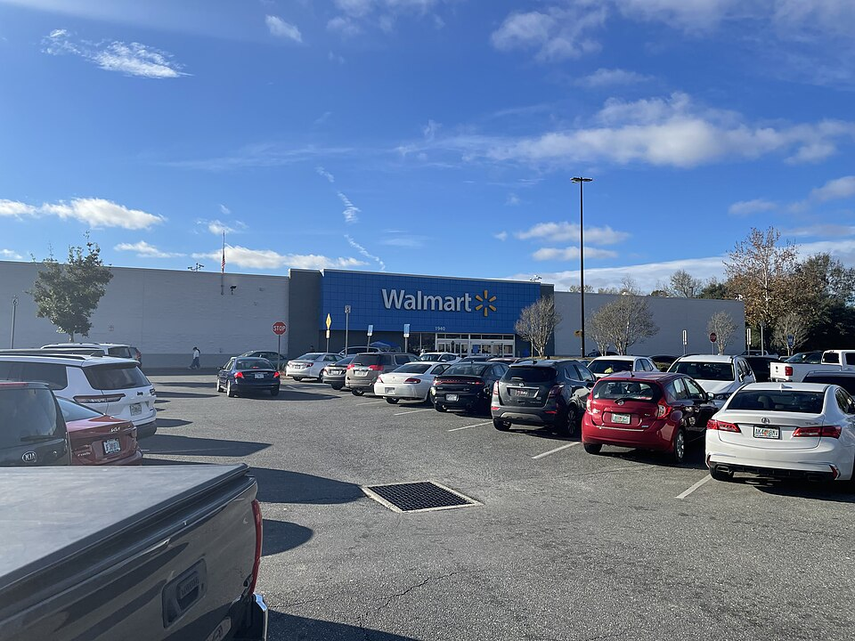
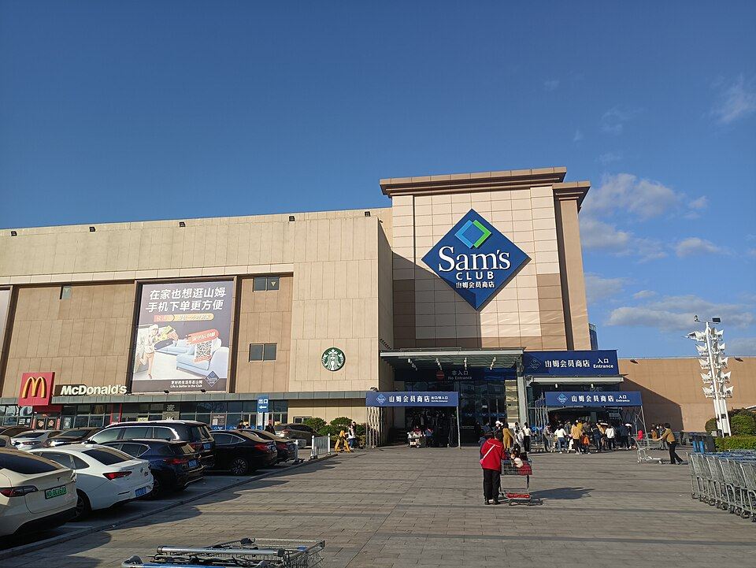

설립연도
1962년

미국 전역의 대형 할인마트 월마트와 회원제 창고형 매장 샘스클럽을 운영하는 회사예요. 매출로는 세계에서 가장 큰 회사이고, 직원도 약 210만 명이에요. 온라인 주문·배송과 광고 사업을 빠르게 키우면서 2025년 12월 상장 시장을 뉴욕증권거래소에서 나스닥으로 옮겼어요.
칸에 마우스를 올리거나 누르면 자세한 설명을 볼 수 있어요.

미국에 4천 개가 넘는 매장을 두고 식료품부터 생활용품까지 싸게 팔아요. 매장을 창고처럼 써서 온라인 주문을 빠르게 배송하는 것이 강점이에요.
대표 예월마트 슈퍼센터, 온라인 주문·당일 배송
멕시코·캐나다·중국 등에서 매장을 운영하고, 인도 최대 온라인 쇼핑몰 플립카트를 가지고 있어요.
대표 예월멕스(멕시코), 플립카트(인도)

연회비를 낸 회원만 이용하는 창고형 할인매장이에요. 코스트코와 경쟁해요.
대표 예샘스클럽
월마트 앱과 매장 화면에 상품 광고를 실어 주는 광고 사업과, 무료 배송 등을 주는 유료 회원제 월마트+가 빠르게 크고 있어요. 이익이 많이 남는 사업이에요.
대표 예월마트 커넥트, 월마트+
원화 금액은 1달러 = 1,339.4원(2026년 11월 20일 유럽중앙은행 기준환율)으로 환산한 대략적인 값이에요.
| 기간 | 매출 | 영업이익 | 순이익 |
|---|
월마트의 회계연도는 매년 1월 말에 끝나요. 예를 들어 2026 회계연도는 2025년 2월~2026년 1월이에요.
사업마다 겨루는 상대가 달라요